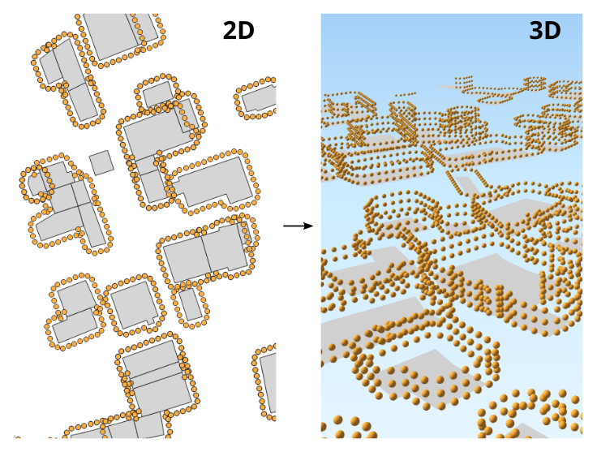

Building Grid3D
Buildings Grid
Overview
➡️ Generates 3D receivers around the buildings and at different levels. Main parameters:
“Height between levels”: coupled with the building height, allows to determine the number of levels,
“Distance from wall”: set the distance between the receivers and the building facades,
“Distance between receivers”: set the number of receivers around the buildings.
✅ The output table is called RECEIVERS

Arguments
Mandatory inputs
tableBuilding— Buildings table nameName of the Buildings table. The table must contain:
THE_GEOM : the 2D geometry of the building (POLYGON or MULTIPOLYGON)
HEIGHT : the height of the building (in meter) (FLOAT)
POP : building population to add in the receiver attribute (FLOAT) (Optional)
Type:
String
Optional inputs
delta— Distance between receiversDistance between receivers (in the Cartesian plane - in meters) (FLOAT)
Type:
DoubleDefault:
10distance— Distance from wallDistance between the receivers and the wall, in metres (FLOAT)
Type:
DoubleDefault:
2fence— Extent filterCreate receivers only in the provided polygon (fence)
Type:
GeometryfenceTableName— Filter using table bounding boxFilter receivers, using the bounding box of the given table name:
Extract the bounding box of the specified table,
then create only receivers on the table bounding box.
The given table must contain:
THE_GEOM : any geometry type.
Type:
StringheightLevels— Height between levelsHeight between each level of receivers, in meters (FLOAT)
Type:
DoubleDefault:
2.5sourcesTableName— Sources table nameKeep only receivers that are at least 1 meter from the provided source geometries.The source geometries table must contain:
THE_GEOM : any geometry type
Type:
String
Output
result— Created tableName of the table containing the results of the computation. Can be used as input for another process.
Type:
String